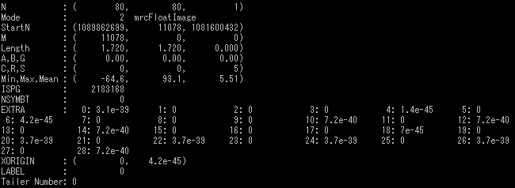
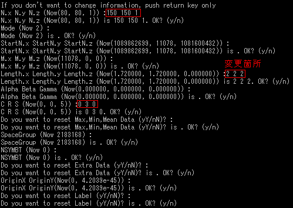
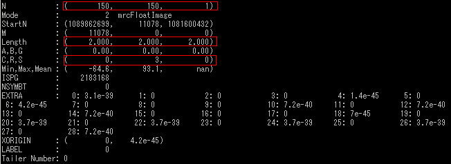
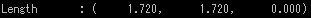
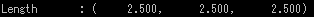

mrcInfoSet
mrcファイルの設定を変更する
オプション一覧
| オプション |
必須項目/選択項目 |
説明 |
デフォルト |
| -i |
必須 |
入力ファイル設定 |
NULL |
| -Length |
選択 |
１ピクセルの幅を設定 |
2.5 2.5 2.5 |
| -h |
選択 |
ヘルプを表示 |
|
******実行例******
------オプション必須項目のみの場合------
実行前のファイルデータ

以下のように各項目ごとに変更するか聞かれるので、変更する箇所だけ入力する

実行後のファイルデータ

------オプション -Length------
１ピクセルの幅だけを変更する
実行前の１ピクセルの幅

実行後の１ピクセルの幅
